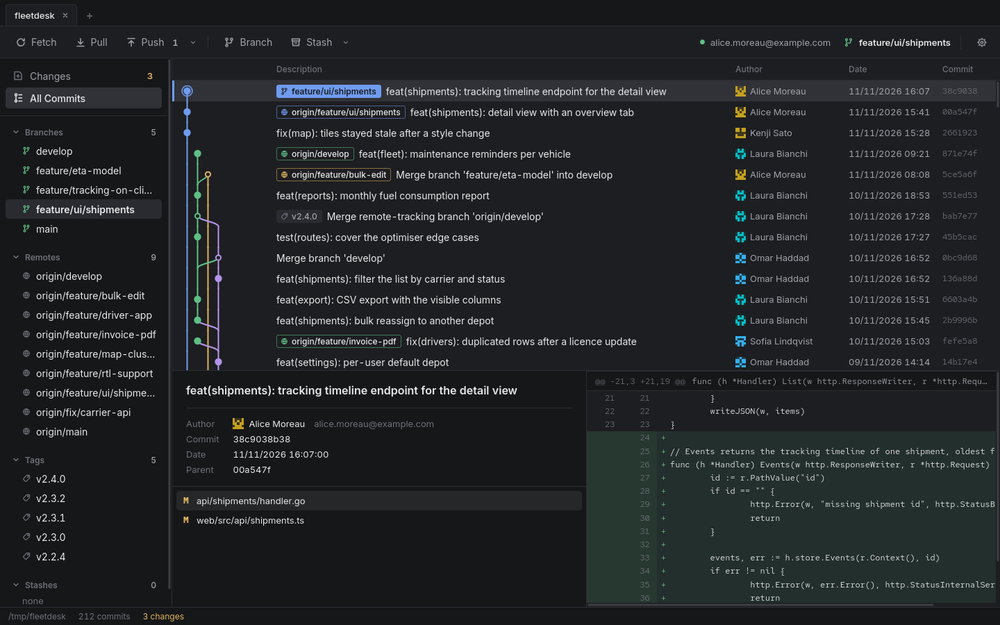
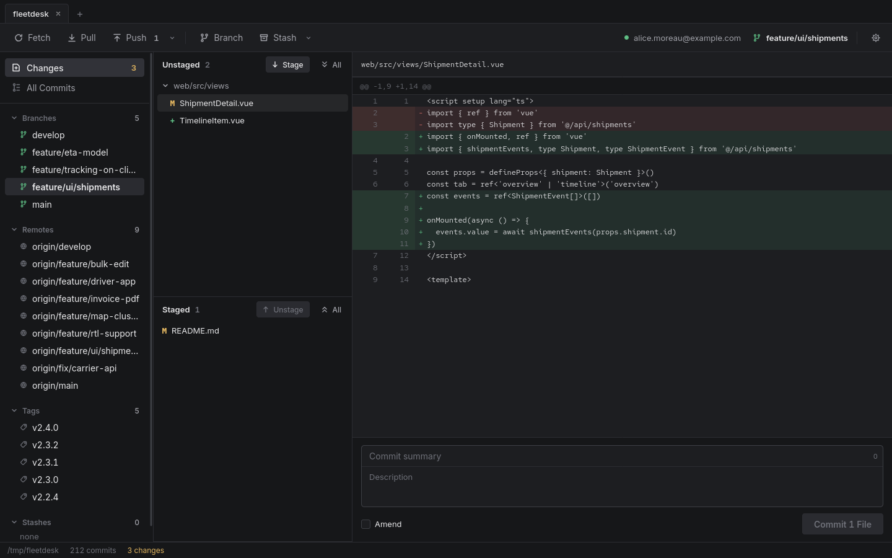

A lightweight Git client for Linux.
A fast, focused Git client that does the daily work and nothing more.

Features
Everything you use daily.
// and nothing you don't
-
Written in Go
Wails and Vue, no Electron
-
Lightweight
~4.5 MB package
-
Minimal
A clean UI with no bloated features
-
Tabs
Several repos open at once
-
Conflict resolver
Pick ours or theirs, line by line
-
Open source
Read, build and fork it on GitHub

Install
Grab a package from the latest release, then:
# Fedora, RHEL
sudo dnf install ./focagit-*.x86_64.rpm
# Debian, Ubuntu
sudo apt install ./focagit_*_amd64.debOr just double-click the package to install it from your software center.